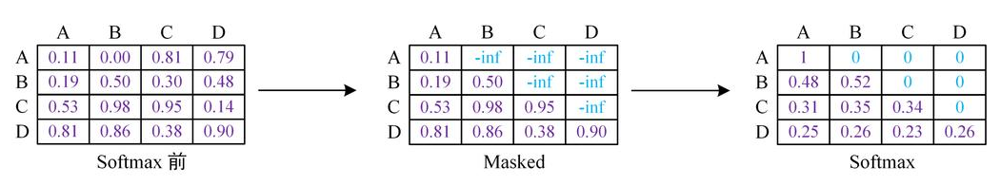

transformer笔记
由于老是忘记transformer的细节，今天整个笔记记一下，免得又忘了
一个batch
有batch_size句话，一句话有n个单词，不够就pad到n，超出就截断
嵌入层嵌入后，输出维度是[batchsize, n, d_model]
也就是每个单词的嵌入是一个(1, d_model)的向量
进入到self-attention。先计算q, k, v，每个单词都有一个q, k, v
对于一个单词的词嵌入
\[
\bm{x}_{emb} \in R^{1\times d_{model}}
\]
\[
\bm{q}^{1\times d_{model}}\ \ = \bm{x}_{emb}\bm{W^{Q}}, \bm{W^{Q}}\in
R^{d_{model\ \ \ \ } \times d_{model}}
\]
\[
\bm{k}^{1\times d_{model}}\ \ = \bm{x}_{emb}\bm{W^{K}}, \bm{W^{K}}\in
R^{d_{model\ \ \ \ } \times d_{model}}
\]
\[
\bm{v}^{1\times d_{model}}\ \ = \bm{x}_{emb}\bm{W^{V}}, \bm{W^{V}}\in
R^{d_{model\ \ \ \ } \times d_{model}}
\]
对所有的单词，\(W^Q,W^K,W^V\)都是一样的
然后计算每个单词和其他所有单词的注意力分数，对于一个单词的q和其他所有单词（包括自己）的v之间的相似度，每个相似度是一个标量，所以一个单词和n个单词的相似度是\(R^{1\times
n}\)的向量，然后对这个向量做softmax，得到的结果和各个单词的v加权和，作为一个单词的attention输出。
\[
z_{1}^{1\times d_{model}} = softmax(q_1 \cdot k_1^T, q_1 \cdot k_2^T,
\cdots, q_1 \cdot k_n^T)V
\]
整个句子的输出是
\[
Z^{n\times d_{model}}\ = softmax(QK^T/\sqrt{d_k})V
\]
多头注意力
生成h个
\[
W^Q, W^K \in R^{d_{model\ \ \ \ }\times d_k}
\]
\[
W^V \in R^{d_{model\ \ \ \ }\times d_v}
\]
这样，对于每个单词，可以得到h个输出，都是\(R^{1\times d_v}\)的，然后把这h个输出直接拼接在一起，就变成了\(R^{1\times hd_v}\)
然后经过一个全连接层\(W_0\in R^{hd_v \times d_{model}}\)，输出的结果是\(R^{1\times d_{model}}\)
这个输出结果在经过FFN，也就是先变成2048维，再变回来512维，一层就结束了。
在实际中，设置了\(d_k = d_v\)，并且\(hd_v = d_{model} = 512\)，所以\(W_0\)变换在改变维度上没有起作用，仅仅增加了模型参数。
顺便提一句，BERT的hidden_size就是指这里的\(d_{model}\)
多头注意力和单头的区别
使用12个维度是64的头生成的结果也是768维的，那和我使用一个768维的注意力头有什么区别？
考虑一句话：I love you. 使用注意力机制后，对于每个单词输出了一个768维的表征向量，这个向量是所有单词的value向量的加权和。也就是\(Attention_{you} = 0.3*Value_{I} + 0.4*Value_{love} + 0.3*Value_{you}\). [0.3,0.4,0.3]就是加权和使用的权重，也就是softmax后的注意力分数。
把768维分成12个部分，每个部分是64维，则每个部分的加权的权重都不完全相同。也就是，对于生成的you的[0-64]维，可能I占0.3，但是在you的65-128维中，I可能是占据0.4。如果是单头注意力，0-768维的权重全是相同的。
mask机制
该部分主要图片偷自：
https://blog.csdn.net/songyunli1111/article/details/108023139

不难看出，在mask后，对于A的attention输出，BCD没有任何贡献，对于B的attention输出，CD没有任何贡献，以此类推。
mask的实现方法是，弄个mask矩阵，该矩阵上三角是负无穷，下三角是0，把mask矩阵和attention矩阵相加，这样，就得到了上图中的Masked。经过softmax后，负无穷那部分自然就变成了0.
past_key_value
在查看gpt2生成文本的例子时，发现有个past_key_value的参数，研究了一天终于明白了这个参数的作用：
给定一句话，假设输入序列有10个token，那么GPT2的输出就会有10个位置，输出的logits的维度是：logits.shape = [1, 10, 50526](bsz, seq_len, vocab_size)。我们生成下一个词，是用的logits[:, -1]。而这个值，只依赖于输入序列中最后一个token的query,
key, value以及他之前的tokens的key, value。1
原本上，当生成第一个词后，生成的token拼接在上一次输入token的序列后，再次输入模型生成下一个词。但是，实际上，只需要输入最后一个token，以及之前的tokens的key和value即可计算。
假设10个词的词嵌入分别是ABCDEFGHIJ，每个都是768维的行向量，那么模型的计算过程是：
\[ query= \begin{pmatrix} A \\ B \\ \vdots \\ J \end{pmatrix} Q^W= \begin{pmatrix} AQ^W \\ BQ^W \\ \vdots \\ JQ^W \end{pmatrix} =\begin{pmatrix} Q_A \\ Q_B \\ \vdots \\ Q_J \end{pmatrix} \in R^{seq\_len\times hidden\_size} \\ key= \begin{pmatrix} A \\ B \\ \vdots \\ J \end{pmatrix} K^W= \begin{pmatrix} AK^W \\ BK^W \\ \vdots \\ JK^W \end{pmatrix} =\begin{pmatrix} K_A \\ K_B \\ \vdots \\ K_J \end{pmatrix} \\ value= \begin{pmatrix} A \\ B \\ \vdots \\ J \end{pmatrix} V^W= \begin{pmatrix} AV^W \\ BV^W \\ \vdots \\ JV^W \end{pmatrix} =\begin{pmatrix} V_A \\ V_B \\ \vdots \\ V_J \end{pmatrix} \\ masked\_attention = softmax(\frac{(query \times key^T) }{\sqrt{d_k}}+ attention\_mask)\\ \]
其中：
\[
\begin{aligned}
query \times key^T&=\begin{pmatrix}
AQ^W \\
BQ^W \\
\vdots \\
JQ^W
\end{pmatrix}
\begin{pmatrix}
(AK^W)^T & (BK^W)^T & \cdots & (JK^W)^T\\
\end{pmatrix}\\
&=\begin{pmatrix}
Q_A{K_A}^T & Q_A{K_B}^T & \cdots & Q_A{K_J}^T\\
\vdots &\vdots&\cdots&\vdots\\
\color{red}{Q_J{K_A}^T}&\color{red}{Q_J{K_B}^T
}&\color{red}{\cdots} & \color{red}{Q_J{K_J}^T}
\end{pmatrix}
\end{aligned}
\\
\]
由于mask、除以dk等操作都是element_wise的操作，不涉及不同token的计算，softmax也是得到masked_attention后的计算，所以我们忽略这些操作。残差连接和norm等也忽略。
\[
\begin{aligned}
attention\_output&= masked\_attention \times value\\
&=\begin{pmatrix}
Q_A{K_A}^T & Q_A{K_B}^T & \cdots & Q_A{K_J}^T\\
\vdots &\vdots&\cdots&\vdots\\
\color{red}{Q_J{K_A}^T}&\color{red}{Q_J{K_B}^T
}&\color{red}{\cdots} & \color{red}{Q_J{K_J}^T}
\end{pmatrix}
\begin{pmatrix}
\color{red}{V_A} \\
\color{red}{V_B} \\
\color{red}\vdots \\
\color{red}{V_J}
\end{pmatrix}\\
&=\begin{pmatrix}
\displaystyle\sum_{i = A}^{J}Q_A{K_i}^TV_i \\
\displaystyle\sum_{i = A}^{J}Q_B{K_i}^TV_i \\
\vdots \\
\color{red}{\displaystyle\sum_{i = A}^{J}Q_J{K_i}^TV_i}
\end{pmatrix}
=\begin{pmatrix}
X_A\\
X_B\\
\vdots\\
\color{red}{X_J}
\end{pmatrix}
\in R^{10\times 768}
\end{aligned}
\\
\begin{aligned}
令X&=attention\_output\\
logits&=MLP(FFN(X))\\
&=((relu(XW_1+b_1))W_2+b_2)W_3+b_3
\end{aligned}
\\
而XW_1+b_1=\begin{pmatrix}
X_A\\
X_B\\
\vdots\\
\color{red}{X_J}
\end{pmatrix}
W_1+b_1=\begin{pmatrix}
X_AW_1+b_{1,1}\\
X_BW_1+b_{1,2}\\
\vdots\\
\color{red}{X_JW_1+b_{1,10}}
\end{pmatrix}
\]
上式中，带W都是模型的参数（weight）。本来GPT有好多层，我们就假定成只有1层，多层类似。
从上述不难看出，最后一个位置的logits，只需要\(X_J\)，而\(X_J\)只需要\(Q_J\)以及\(K_i\),\(V_i\) for \(i \in
{A, ...
,J}\)。也就是说除了最新的token的query、key、value，之前的词只需要key和value即可，而后者已经在前一步生成时计算得到了。past_key_value存储的就是这些。对于多层的transformer结构，每层都保存自己的KV
cache，KV
cache的大小就是：(2, L, B, S, E)，(2, Layers, batch_size, seq_length, embedding_dim)。
在生成时，生成第一个token时需要完整的Dense attention，之后只需要计算最后一行的attention即可。
注1↩︎